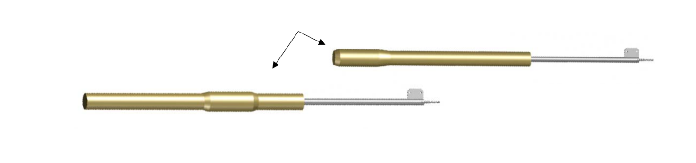

Built for Performance
Our lances are designed to deliver dependable service in demanding industrial environments where durability and consistency matter.
Contact Us Today
(440) 386-4580
info@usrp.com
U.S. Refractory Products designs and provides lance solutions built to support reliable tundish performance, product durability, and cost-effective operation in demanding steel applications.

Our lance products are developed to help customers achieve more consistent performance while reducing wear, maintenance needs, and unnecessary operating cost.
We understand that each operation has different production demands, so our lance solutions are designed to support practical use, reliable results, and long-term value.
Our lances are designed to deliver dependable service in demanding industrial environments where durability and consistency matter.
Each lance solution is developed with both performance and efficiency in mind, helping customers improve value over time.
We help customers identify the right lance solution based on their operating conditions, production needs, and performance goals.
Our lance products are not only designed to function effectively, but also to help customers improve efficiency and reduce long-term cost. We focus on practical value, dependable quality, and strong support.
By combining product knowledge with customer-focused service, we help businesses choose lance solutions that match real production needs.

Contact our team to discuss your application and learn how U.S. Refractory Products can help you find the right lance solution for your operation.